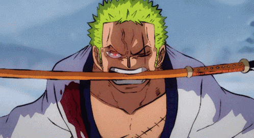

Who is Zoro?
Zoro, also known as "Pirate Hunter" Zoro, is a character in the popular anime and manga series One Piece. He is the first crew member to join the protagonist Monkey D. Luffy on his journey to become the Pirate King. Zoro is a skilled swordsman, who uses three swords simultaneously in combat, a style known as Santoryu. He is often portrayed as serious, focused, and determined, with a stoic demeanor that can sometimes come across as aloof.
Zoro's backstory is one of tragedy and determination. As a child, he trained under the legendary swordsman Koushiro, with the goal of becoming the greatest swordsman in the world. However, during his training, Zoro's mentor was killed by a corrupt government agent. Despite this setback, Zoro continued to hone his skills, eventually becoming a fearsome pirate hunter. When he meets Luffy, he recognizes the potential for adventure and challenge in joining the crew, and eagerly accepts Luffy's invitation to become a Straw Hat Pirate.
Throughout the series, Zoro is depicted as a reliable and trustworthy member of the crew, willing to put his life on the line for his friends and allies. He often serves as Luffy's second-in-command, providing strategic advice and tactical support during battles. Zoro's unwavering dedication to his dream of becoming the greatest swordsman in the world is a driving force behind his character, and he is constantly seeking out new challenges and opponents to test his skills against. Overall, Zoro is a fan-favorite character in the One Piece series, beloved for his strength, loyalty, and determination.